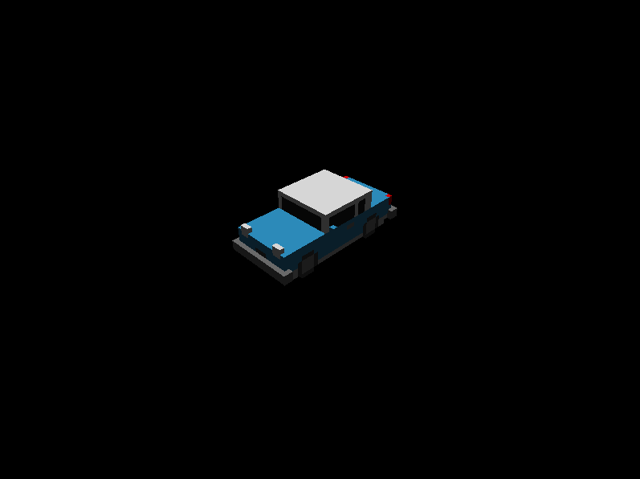

Voxels
Using the Voxels plugin.
This example shows the Voxels plugin, which registers asset bridges used to load voxel grids (.grid) and palettes (.pal). Check out the Introduction and Custom Bridges sample for an introduction on the Assets plugin.
It is very similar to the examples-engine-renderer, differing only in the fact that in this sample the grid and palette are loaded from files.
The plugin function is included from the engine/
cubos.plugin(voxelsPlugin);
Lets start by defining the handles of the assets we want to use, as done in the Assets sample.
static const Asset<VoxelGrid> CarAsset = AnyAsset("059c16e7-a439-44c7-9bdc-6e069dba0c75"); static const Asset<VoxelPalette> PaletteAsset = AnyAsset("1aa5e234-28cb-4386-99b4-39386b0fc215");
In this sample, instead of creating a new palette, we just set the RenderPalette's handle to the PaletteAsset handle we defined previously.
cubos.startupSystem("set palette").call([](RenderPalette& palette) { palette.asset = PaletteAsset; });
Now, we can create an entity with our car asset.
cubos.startupSystem("create a car").tagged(assetsTag).call([](Commands cmds, const Assets& assets) { // Calculate the necessary offset to center the model on (0, 0, 0). auto car = assets.read(CarAsset); glm::vec3 offset = glm::vec3(car->size().x, 0.0F, car->size().z) / -2.0F; // Create the car entity cmds.create().add(RenderVoxelGrid{CarAsset, offset}).add(LocalToWorld{}); });
And voilá, you now have a car floating in space.